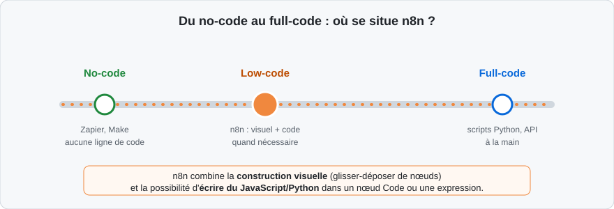
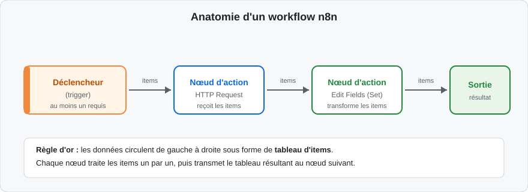
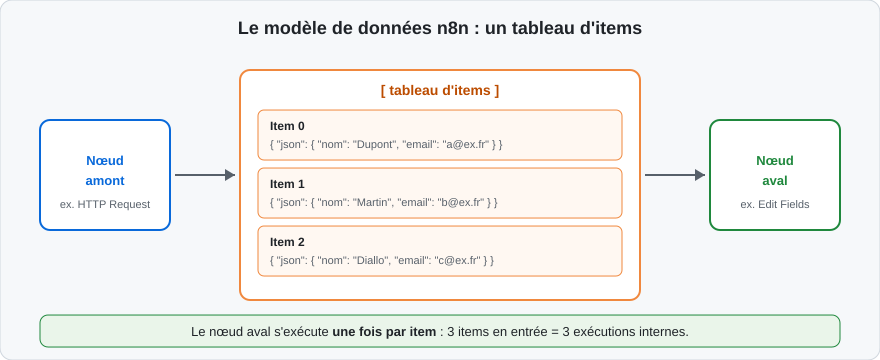
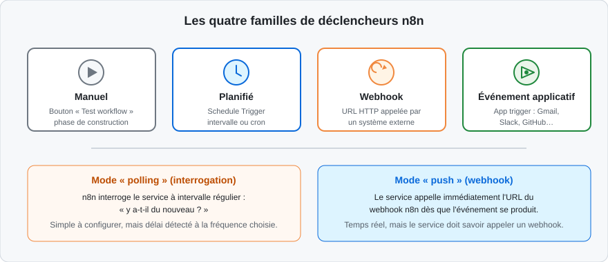

Pourquoi automatiser ?
Chaque organisation, quelle que soit sa taille, fait tourner des dizaines de processus répétitifs : copier une pièce jointe reçue par e-mail vers un dossier partagé, saisir une commande dans deux logiciels différents, relancer un client dont la facture est en retard, créer un compte utilisateur dans quatre outils à l'arrivée d'un salarié.
Ces tâches ont trois points communs : elles sont répétitives, elles suivent des règles stables et elles ne demandent aucun jugement humain. Ce sont les candidates idéales à l'automatisation.
Automatiser un processus, c'est le confier à un logiciel qui l'exécute :
- plus vite — une copie de fichier ou un appel d'API prend quelques millisecondes ;
- sans erreur de saisie — pas de faute de frappe, pas de champ oublié ;
- à toute heure — la nuit, le week-end, sans intervention ;
- de façon traçable — chaque exécution est datée et journalisée.
Un workflow d'automatisation ressemble à une recette de cuisine. Les ingrédients, ce sont les données d'entrée (un e-mail reçu, une ligne de tableur). Les étapes, ce sont les actions (filtrer, transformer, envoyer). La personne qui suit la recette, c'est le moteur d'automatisation : il applique les étapes dans l'ordre, sans improvisation, et obtient le même plat à chaque exécution.
L'orchestration de workflows
Un workflow (flux de travail) est une suite ordonnée d'étapes qui transforment ou transportent une information. Quand ces étapes franchissent les frontières de plusieurs applications — lire dans un CRM, écrire dans un tableur, notifier sur un outil de messagerie — on parle d'orchestration : un chef d'orchestre logiciel déclenche chaque étape au bon moment, avec les bonnes données, et gère les cas d'erreur.
L'orchestrateur apporte trois services que la simple juxtaposition de scripts n'offre pas :
- une vision centralisée de tous les flux, dessinée visuellement ;
- une journalisation de chaque exécution, indispensable pour diagnostiquer ;
- des mécanismes standard de reprise sur erreur, de temporisation et de branchement conditionnel.
Des exemples par métier
| Métier | Processus automatisé type | Déclencheur |
|---|---|---|
| Ressources humaines | Création des comptes à l'arrivée d'un salarié | Ligne ajoutée au fichier d'onboarding |
| Support client | Routage d'un ticket vers la bonne équipe | Nouveau ticket dans l'outil de support |
| Marketing | Alerte quand un prospect remplit un formulaire | Soumission du formulaire web |
| Finance | Relance des factures échues | Planification quotidienne |
| Informatique | Sauvegarde et rapport d'état des serveurs | Planification nocturne |
| Commerce | Synchronisation des commandes boutique → ERP | Nouvelle commande en ligne |
Ces exemples partagent la même ossature : un événement déclencheur, une ou plusieurs étapes de traitement, et un résultat écrit quelque part. Toute la formation consiste à apprendre à construire cette ossature sans écrire de programme complet.
À l'issue du chapitre, chaque stagiaire sait reconnaître cette ossature dans les processus de sa propre organisation — c'est le premier livrable concret de la journée, avant même d'ouvrir l'éditeur. Il servira de base aux échanges du tour de table qui ouvre traditionnellement la formation.
Ce qui est automatisable — et ce qui ne l'est pas
Un processus est automatisable s'il respecte trois conditions :
- ses règles sont explicites et stables (on peut les écrire sans ambiguïté) ;
- ses données d'entrée sont accessibles par un logiciel (API, fichier, base) ;
- ses cas particuliers sont limités et identifiables à l'avance.
À l'inverse, une tâche qui demande d'apprécier un contexte humain, de négocier, ou dont les règles changent chaque semaine, sera mal automatisée. L'automatisation d'un mauvais processus produit des erreurs à grande vitesse : on cartographie et on assainit le processus avant de l'automatiser.
En formation, ce filtre s'applique aux cas apportés par les stagiaires : chacun est invité à décrire un processus réel de son quotidien, et le groupe vérifie collectivement qu'il passe les trois conditions — c'est ce cas réel qui servira de fil rouge aux ateliers des chapitres suivants.
Évaluer le gain avant de construire
Une automatisation se justifie par un calcul simple que tout stagiaire doit savoir mener avec le métier concerné :
- fréquence : combien de fois le processus s'exécute-t-il par semaine ?
- durée manuelle : combien de minutes prend une exécution à la main ?
- taux d'erreur : combien d'exécutions demandent une reprise ?
Un processus qui prend dix minutes, cinq fois par semaine, représente plus de quarante heures par an — sans compter les erreurs et les oublis. Si le flux se construit en une journée et se maintient en une heure par trimestre, le retour sur investissement est atteint en quelques mois. À l'inverse, un processus exécuté deux fois par an ne mérite souvent pas d'être automatisé : une procédure écrite suffit.
Ce calcul a aussi une vertu pédagogique : il force à cartographier le processus avant de l'automatiser — étapes, acteurs, données, exceptions. Cette cartographie, même sommaire, devient le plan directeur du workflow à construire.
Automatiser un processus mal conçu ne le répare pas : cela se contente de reproduire ses défauts plus vite et à plus grande échelle. La première question à poser n'est pas « comment automatiser ? » mais « ce processus est-il sain ? ».
Trois familles d'outils
Face à un besoin d'automatisation, trois approches coexistent :
-
le no-code : l'intégralité du flux se construit visuellement, en configurant des blocs. Aucune ligne de code n'est écrite. Exemples : Zapier, Make ;
-
le low-code : la construction reste visuelle, mais il est possible d'injecter du code à certains endroits pour traiter les cas que les blocs ne couvrent pas. Exemples : n8n, Power Automate (avec ses expressions) ;
-
le full-code : tout est écrit dans un langage de programmation (scripts Python, Node.js…) et déployé par des développeurs.

Le schéma ci-dessus positionne n8n entre les deux extrêmes. La construction d'un workflow se fait par glisser-déposer de nœuds sur un canevas : c'est du visuel, accessible sans savoir programmer. Mais dès qu'une transformation de données sort de l'ordinaire, une expression (formule JavaScript courte) ou un nœud Code (JavaScript ou Python) prend le relais à l'intérieur même du workflow.
Cette position hybride a une conséquence pratique pour cette formation : aucune compétence de développement n'est exigée pour démarrer, et pourtant rien n'est bloquant quand le besoin devient pointu. Le stagiaire progresse du visuel vers le code à son rythme, sans changer d'outil.
Comparatif des approches
| Critère | No-code | Low-code (n8n) | Full-code |
|---|---|---|---|
| Profil de l'utilisateur | Métier | Métier technique, développeur | Développeur |
| Vitesse de mise en route | Très rapide | Rapide | Lente |
| Cas complexes gérés | Non | Oui (code ponctuel) | Oui (sans limite) |
| Maintenance par un tiers | Facile | Facile | Difficile sans le code |
| Coût à grande échelle | Élevé (abonnement par tâche) | Maîtrisable | Variable |
| Contrôle des données | Hébergé chez l'éditeur | Hébergement libre possible | Libre |
Quand choisir quoi ?
Le no-code pur convient aux flux simples et standard, mis en place par des équipes métier sans ressource technique. Le full-code se justifie quand la logique est le cœur de l'entreprise, avec des exigences fortes de performance ou de tests. Le low-code couvre le vaste territoire intermédiaire : des flux qui démarrent simples, puis gagnent en exigence — transformations fines, branchements multiples, interconnexion avec des outils internes.
Beaucoup d'organisations combinent les trois approches : du no-code pour un flux marketing ponctuel, n8n pour les intégrations entre outils internes, et du code pour le produit vendu aux clients. Les approches ne s'opposent pas, elles se complètent.
Le risque du « shadow IT »
Quand les équipes métier automatisent sans en parler à la direction des systèmes d'information, apparaît une informatique parallèle (shadow IT) : des flux dont personne n'a la cartographie, qui manipulent parfois des données sensibles, et qui cassent silencieusement le jour où une API change. Un outil comme n8n, déployé de façon centralisée et visible de tous, est aussi une réponse à ce risque : les automatisations deviennent des objets partagés, documentés et supervisés.
Données personnelles : la question à poser dès la conception
Un workflow qui déplace des coordonnées de clients, de salariés ou de prospects manipule des données personnelles au sens du RGPD. Trois questions simples, à poser avant de construire :
-
les données transitent-elles hors de l'Union européenne (serveurs d'un outil SaaS américain, par exemple) ?
-
le flux est-il documenté dans le registre des traitements de l'organisation ?
-
les credentials utilisés donnent-ils un accès proportionné au besoin ?
L'auto-hébergement de n8n simplifie la première question : le moteur et les journaux restent sur l'infrastructure de l'organisation, et seuls les appels aux services connectés franchissent le réseau. Le chapitre 4 revient sur la gestion des secrets et la sécurisation des accès.
Un outil d'orchestration né en 2019
n8n (qui se prononce « nodemation », contraction de node et automation) est un outil d'automatisation de workflows créé en 2019 à Berlin par Jan Oberhauser. Il est écrit en TypeScript et s'exécute sur Node.js.
Trois choix fondateurs le distinguent :
-
le code source est disponible : n8n est distribué sous une licence dite fair-code (Sustainable Use License) — utilisation interne libre et gratuite, y compris auto-hébergée, avec restriction sur sa revente comme service ;
-
l'outil est auto-hébergeable : il tourne sur votre machine, votre serveur ou votre cloud, et les données ne quittent pas votre infrastructure ;
-
le moteur reste extensible par le code : nœud Code, expressions JavaScript, et possibilité de créer ses propres nœuds.
n8n Cloud ou auto-hébergé ?
| Critère | n8n Cloud | Auto-hébergé |
|---|---|---|
| Installation | Aucune | Docker, npm… (à votre charge) |
| Maintenance et mises à jour | Assurées par n8n | À votre charge |
| Localisation des données | Serveurs de l'éditeur (UE) | Votre infrastructure |
| Coût | Abonnement selon le volume d'exécutions | Gratuit (licence fair-code) en usage interne |
| Accès réseau aux outils internes | À ouvrir explicitement | Natif, n8n est dans votre réseau |
| Public typique | Équipes sans infra | Équipes techniques, contraintes de données |
Pour cette formation, l'auto-hébergement local est utilisé : c'est le mode le plus formateur, car il expose tous les réglages. Tout ce qui est appris reste transposable à n8n Cloud, dont l'interface est identique.
Les briques de l'écosystème
L'univers n8n s'articule autour de quatre objets, que le chapitre manipulera tour à tour :
- les workflows : les flux eux-mêmes, dessinés sur le canevas ;
-
les credentials (identifiants) : les clés d'API, comptes et mots de passe, stockés chiffrés et réutilisables d'un workflow à l'autre ;
-
les exécutions : l'historique daté de chaque passage d'un workflow, avec les données entrées et sorties de chaque nœud ;
-
les intégrations natives : plusieurs centaines de nœuds prêts à l'emploi (plus de 400 : Gmail, Slack, Google Sheets, GitHub, PostgreSQL…), complétés par le nœud générique HTTP Request pour parler à n'importe quelle API.
Autour de l'outil gravitent une bibliothèque de modèles de workflows (des centaines de flux prêts à adapter), une communauté active (forum, nœuds communautaires) et une documentation officielle exhaustive — les liens sont centralisés dans le fichier Ressources en annexe de ce support.
Sous le capot : les composants d'une instance
Une instance n8n auto-hébergée, même minimale, réunit quatre composants qu'il est utile de distinguer dès maintenant pour comprendre les chapitres suivants :
-
l'éditeur : l'application web servie sur le port 5678, où l'on dessine les workflows ;
-
le moteur d'exécution : le processus Node.js qui exécute les workflows, nœud par nœud, quand un déclencheur se manifeste ;
-
la base de données : SQLite par défaut — un simple fichier dans le dossier de données — qui stocke les workflows, les credentials chiffrés et l'historique des exécutions ; PostgreSQL la remplace en production (chapitre 4) ;
-
le dossier de données (
/home/node/.n8ndans le conteneur,~/.n8nen installation npm) : il contient la base SQLite, la clé de chiffrement des credentials et les éventuels fichiers binaires.
n8n chiffre les credentials avec une clé stockée dans le dossier de données
(fichier config, variable N8N_ENCRYPTION_KEY si on la fournit soi-même).
Restaurer une base sur une autre machine sans cette clé rend tous les
credentials illisibles. Sauvegarder le dossier de données, c'est sauvegarder
la base et la clé.
Face aux autres outils du marché
| n8n | Zapier | Make | Power Automate | |
|---|---|---|---|---|
| Modèle | Fair-code, auto-hébergeable | SaaS propriétaire | SaaS propriétaire | SaaS, écosystème Microsoft |
| Code possible | Oui (JS/Python dans le flux) | Très limité | Limité (fonctions) | Expressions |
| Branchements complexes | Oui | Payant et limité | Oui | Oui |
| Tarification | Exécutions (Cloud) / gratuit (self-hosted) | Par tâche | Par opération | Par utilisateur/flux |
| Cible | Équipes techniques et mixtes | Métier | Métier et technique | Entreprises Microsoft 365 |
Une PME de vente en ligne reçoit ses commandes dans sa boutique, ses factures dans son outil comptable et ses demandes SAV dans sa boîte mail. Aucun de ces trois logiciels ne parle nativement aux deux autres. n8n, installé sur un petit serveur interne, joue le rôle de traducteur permanent : chaque nouvelle commande crée la facture, chaque facture échue déclenche une relance, chaque e-mail SAV devient un ticket. C'est précisément le type de flux que vous saurez construire à l'issue de cette formation.
Trois portes d'entrée
| Option | Pour qui | Prérequis |
|---|---|---|
| n8n Cloud | Essai rapide, production sans infra | Un navigateur |
| Docker | Serveurs, postes de travail outillés | Docker Desktop ou moteur Docker |
| npm | Postes de développement | Node.js 20 LTS ou supérieur |
La suite du chapitre détaille Docker et npm, les deux modes auto-hébergés utilisés pendant la formation. Le formateur indique en début de session lequel est retenu pour la salle.
Installation avec Docker
Docker empaquette n8n et toutes ses dépendances dans un conteneur isolé : c'est le mode de déploiement de référence, en formation comme en production.
Vérifier d'abord que Docker est disponible :
docker --version
Puis lancer n8n avec la commande documentée :
docker volume create n8n_data
docker run -it --rm \
--name n8n \
-p 5678:5678 \
-v n8n_data:/home/node/.n8n \
docker.n8n.io/n8nio/n8n
Chaque élément de cette commande a un rôle précis :
| Élément | Rôle |
|---|---|
docker volume create n8n_data |
Crée un volume persistant pour les données |
-it --rm |
Console interactive, conteneur supprimé à l'arrêt (les données survivent, elles sont dans le volume) |
--name n8n |
Nomme le conteneur pour le manipuler facilement |
-p 5678:5678 |
Expose le port 5678 de n8n sur le port 5678 de la machine |
-v n8n_data:/home/node/.n8n |
Monte le volume sur le dossier interne où n8n écrit workflows, credentials et base SQLite |
docker.n8n.io/n8nio/n8n |
L'image officielle, tirée du registre de n8n |
Quand la console affiche Editor is now accessible via: http://localhost:5678,
l'interface est prête. Le navigateur s'ouvre sur cette adresse.
Tout le travail — workflows, credentials, historique d'exécutions — vit dans le
volume n8n_data (base SQLite par défaut). Lancer le conteneur sans -v,
c'est repartir d'un n8n vierge à chaque redémarrage. En production, ce volume
fait l'objet de sauvegardes régulières, traitées au chapitre 4.
Pour fixer le fuseau horaire utilisé par les planifications, on ajoute deux variables d'environnement au lancement :
docker run -it --rm \
--name n8n \
-p 5678:5678 \
-e GENERIC_TIMEZONE="Europe/Paris" \
-e TZ="Europe/Paris" \
-v n8n_data:/home/node/.n8n \
docker.n8n.io/n8nio/n8n
Installation avec npm
Sur un poste de développement disposant de Node.js 20 LTS ou supérieur, n8n s'installe comme un paquet global :
node --version # vérifier la version de Node.js
npm install n8n -g # installation
n8n start # lancement
Les données sont alors écrites dans le dossier .n8n du répertoire personnel de
l'utilisateur. L'interface est la même : http://localhost:5678.
Premier démarrage : le compte propriétaire
À la toute première ouverture, n8n demande de créer le compte propriétaire (owner) : adresse e-mail, nom, mot de passe. Ce compte administre l'instance — gestion des utilisateurs, des credentials partagés, des réglages.
Même sur localhost, le compte propriétaire protège l'accès à l'éditeur. Sur
une machine partagée ou une instance exposée au réseau, un mot de passe robuste
est indispensable : les credentials stockés dans n8n ouvrent l'accès à tous les
services connectés.
Le tunnel de développement
Les webhooks — abordés plus loin dans ce chapitre — exigent que des services
extérieurs atteignent votre n8n par une URL publique, ce que localhost ne permet
pas. Pour les phases de test, n8n fournit un tunnel intégré :
n8n start --tunnel
n8n affiche alors une URL publique temporaire du type
https://xxxx.hooks.n8n.cloud, vers laquelle les webhooks de test sont redirigés.
L'URL du tunnel change à chaque démarrage et l'ensemble de l'éditeur devient accessible depuis Internet. Le tunnel sert uniquement à tester un webhook pendant la construction ; la mise en production repose sur un vrai nom de domaine et un reverse proxy — c'est l'objet du chapitre 4.
Mettre à jour
Avec Docker, la mise à jour consiste à tirer la nouvelle image puis relancer le conteneur ; le volume conserve les données :
docker pull docker.n8n.io/n8nio/n8n
# puis relancer la commande docker run habituelle
Avec npm : npm update -g n8n. Avant toute mise à jour d'une instance qui compte,
on consulte les notes de version : n8n publie des breaking changes signalés dans
son changelog, et le chapitre 4 détaillera une stratégie de mise à jour sûre.
Démarrage en tâche de fond avec Docker Compose
La commande docker run précédente occupe la console ; dès que l'instance doit
tourner durablement sur une machine, on la décrit dans un fichier
docker-compose.yml :
services:
n8n:
image: docker.n8n.io/n8nio/n8n
restart: unless-stopped
ports:
- "5678:5678"
environment:
- GENERIC_TIMEZONE=Europe/Paris
- TZ=Europe/Paris
volumes:
- n8n_data:/home/node/.n8n
volumes:
n8n_data:
Puis on pilote le service avec deux commandes :
docker compose up -d # démarrage en arrière-plan
docker compose logs -f # suivi des journaux
docker compose down # arrêt propre
Ce fichier est la première brique du déploiement professionnel présenté au chapitre 4, qui y ajoutera PostgreSQL, le reverse proxy HTTPS et la supervision.
Vérifier une installation saine
Quatre contrôles rapides après chaque installation ou mise à jour :
- l'éditeur répond sur
http://localhost:5678(ou l'URL de l'instance) ; - un workflow de test se sauvegarde et s'exécute sans erreur ;
-
les journaux du conteneur (
docker compose logs -fou la console) ne montrent pas d'erreur répétée ; -
le fuseau horaire affiché dans les exécutions correspond au fuseau attendu.
La page d'accueil (Overview)
Après connexion, la page d'accueil invite à créer un Workflow, et donne accès via la bouton "Personal" ou oerview, aux espaces suivants :
-
Workflows : la liste des flux, avec pour chacun son statut (actif ou inactif) et sa date de dernière modification ;
-
Credentials : les identifiants stockés (clés d'API, comptes OAuth…) ;
- Executions : l'historique de toutes les exécutions, réussies ou en erreur ;
-
Projects (projets) : des espaces de rangement pour regrouper workflows et credentials par équipe ou par sujet — la disponibilité dépend de l'édition et de l'offre ;
-
variables: gestion de variables globales entre workflows — la disponibilité dépend de l'édition et de l'offre ;
-
Data Tables: gestion de données persistantes pour stocker les données de sorties de workflows
Et sur la barre latérale
- Templates : la bibliothèque de modèles prêts à importer.
Le canevas (canvas)
L'éditeur de workflow est un canevas infini sur lequel on pose des nœuds et qu'on relie par des connexions. Trois gestes suffisent pour démarrer :
-
cliquer sur le bouton + (ou faire un clic droit) pour ouvrir le panneau d'ajout de nœuds, doté d'un champ de recherche ;
-
glisser-déposer le nœud choisi sur le canevas ;
- tirer la poignée de sortie d'un nœud (le petit cercle à droite) vers la poignée d'entrée du suivant pour créer une connexion.
Le canevas se parcourt à la souris (molette pour zoomer, clic maintenu pour se déplacer) et chaque nœud peut être renommé, déplacé, désactivé ou supprimé.
Le panneau de configuration d'un nœud
Un double-clic sur un nœud ouvre son panneau de configuration, divisé en trois zones :
- à gauche, l'entrée (INPUT) : les données reçues du nœud précédent ;
-
au centre, les paramètres du nœud (onglet Parameters) et ses réglages techniques (onglet Settings : réessais, temporisation, exécution unique…) ;
-
à droite, la sortie (OUTPUT) : les données produites après exécution.
Chaque nœud embarque un lien vers sa documentation officielle, directement dans le panneau : inutile de quitter l'éditeur pour comprendre un paramètre.
L'onglet Settings d'un nœud
Derrière l'onglet Settings de chaque nœud se cachent des réglages d'exécution que les débutants ignorent et que les exploitants utilisent tous les jours :
| Réglage | Effet |
|---|---|
| Always Output Data | Le nœud émet un item même quand son traitement ne produit rien — empêche l'arrêt silencieux d'une branche |
| Retry On Fail | Réessaie automatiquement en cas d'échec, avec nombre de tentatives et délai |
| Notes | Un commentaire libre attaché au nœud, visible au survol |
| Node Color | Une couleur de repérage sur le canevas |
| Disabled | Désactive le nœud sans le supprimer — les données le traversent sans traitement |
Always Output Data et Retry On Fail, en particulier, reviendront au chapitre 3 dans la boîte à outils de la fiabilisation : le premier rend visibles les cas « zéro résultat », le second absorbe les défaillances passagères des API.
Exécuter et inspecter
Deux boutons pilotent l'exécution en cours de construction :
-
Test workflow (ou Execute workflow) : lance une exécution manuelle de tout le flux ;
-
Test step, sur un nœud donné : n'exécute que ce nœud, en réutilisant les données déjà présentes en amont.
Après exécution, chaque nœud arbore un indicateur vert (succès) ou rouge (erreur), et l'onglet OUTPUT affiche les données produites sous trois vues : Table (tabulaire), JSON (arborescence brute) et Schema (types des champs).
L'historique des exécutions
La page Executions liste chaque passage d'un workflow : date, durée, statut (succès, erreur, en cours), mode (manuel ou automatique). Ouvrir une exécution rejoue le flux tel qu'il s'est déroulé : pour chaque nœud, on relit les données d'entrée et de sortie telles qu'elles étaient à cet instant — c'est l'outil de diagnostic principal quand un flux actif se comporte de façon inattendue.
Deux réglages, détaillés au chapitre 4, gouvernent cet historique : sa durée de rétention et le volume de données conservées par exécution. Sur une instance active, l'historique grandit vite : sa maîtrise fait partie de l'exploitation courante.
L'historique des versions
L'éditeur conserve l'historique des versions sauvegardées d'un workflow (Workflow history, selon l'édition). On y compare deux versions et on restaure un état antérieur après une modification malencontreuse. Cette fonction ne remplace pas une vraie sauvegarde externe — traitée au chapitre 4 — mais elle dépanne au quotidien.
Organiser ses workflows au fil de l'eau
Dès que l'instance compte plus d'une dizaine de flux, la liste Workflows devient illlisible sans méthode de rangement. Trois réflexes simples :
-
un préfixe de nommage par domaine —
RH - …,FIN - …,SUP - …— qui groupe visuellement les flux d'un même périmètre ; -
les étiquettes (tags), pour marquer un état (
à revoir,production) ou un service, et filtrer la liste ; -
les Projects quand l'édition le permet, pour séparer nettement les espaces de plusieurs équipes et déléguer les droits.
Cette discipline, prise dès le deuxième workflow créé, évite la page d'accueil anarchique qui décourage la maintenance — et elle rend la recherche instantanée.
Raccourcis utiles
| Raccourci (Windows/Linux) | Raccourci (macOS) | Effet |
|---|---|---|
Ctrl + S |
Cmd + S |
Sauvegarder le workflow |
Ctrl + Entrée |
Cmd + Entrée |
Exécuter le workflow |
Ctrl + O |
Cmd + O |
Ouvrir un workflow existant |
Ctrl + Z |
Cmd + Z |
Annuler |
Ctrl + Maj + Z |
Cmd + Maj + Z |
Rétablir |
Un workflow modifié mais non sauvegardé porte une marque dans l'onglet. Une
exécution de test s'appuie sur l'état courant de l'éditeur, mais un workflow
actif n'exécute que sa dernière version sauvegardée : Ctrl + S avant de
tester, Ctrl + S avant d'activer.
Trois ingrédients : nœuds, connexions, données
Un workflow n8n est un graphe orienté construit sur le canevas :
-
un nœud déclencheur (trigger) qui met le flux en marche — manuellement, sur rendez-vous, ou sur événement extérieur ;
-
des nœuds d'action qui lisent, transforment ou écrivent des données ;
- des connexions qui relient les sorties aux entrées et imposent l'ordre de passage.

Le schéma ci-dessus résume la règle d'or : les données circulent de gauche à droite, de nœud en nœud. Le déclencheur produit les premières données ; chaque nœud d'action reçoit le tableau produit par le précédent, le traite, puis émet son propre tableau, jusqu'à l'extrémité du flux.
Un workflow comporte au moins un déclencheur ; il peut en contenir plusieurs (par exemple un déclencheur planifié et un webhook, qui alimentent le même traitement). À l'inverse, un flux sans déclencheur ne peut ni être exécuté en test ni être activé.
Travailler proprement sur le canevas
Un workflow se lit comme un plan : sa lisibilité conditionne sa maintenance. Trois habitudes à prendre dès le premier jour :
-
renommer chaque nœud avec un verbe d'action — « Récupérer les commandes » plutôt que « HTTP Request » : l'historique d'exécution et les expressions citent les nœuds par leur nom ;
-
aligner et espacer les nœuds, en regroupant les zones fonctionnelles ;
- documenter les zones délicates avec des notes autocollantes (sticky notes), posées librement sur le canevas.
Un exemple lu de bout en bout
Pour fixer la lecture d'un graphe, voici un flux classique de synchronisation quotidienne, tel qu'on le construirait au chapitre 2 :
- un Schedule Trigger se réveille chaque nuit à 2 h ;
- un nœud Google Sheets lit les nouvelles lignes d'un tableur de prospects ;
- un nœud IF écarte les lignes dont le champ e-mail est vide ;
- un nœud Edit Fields normalise la casse des adresses ;
- un nœud CRM (HubSpot, Pipedrive…) crée ou met à jour le contact ;
- un nœud Slack prévient l'équipe commerciale du nombre de contacts traités.
Chaque flèche du dessin correspond à une étape de cette liste ; chaque étape correspond à un nœud nommé par un verbe. Lire un workflow inconnu consiste exactement à produire cette liste à partir du canevas — compétence que les ateliers entraînent à chaque chapitre.
Branches parallèles
Un nœud peut alimenter plusieurs connexions sortantes : après la lecture des prospects, une branche alimente le CRM pendant qu'une autre archive les lignes brutes dans un dossier. n8n exécute alors les branches l'une après l'autre, dans l'ordre de leurs connexions, chacune partant de la même copie des données.
Cette propriété permet de traiter des effets de bord indépendants — notifier, archiver, compter — sans dupliquer l'amont du flux. La fusion de branches (convergence vers un nœud commun) fait appel au nœud Merge, étudié au chapitre 3 avec les parcours conditionnels avancés.
Actif ou inactif : deux états bien distincts
Un workflow possède un interrupteur Active / Inactive en haut de l'éditeur :
- inactif, il ne réagit à rien — seul le bouton de test peut l'exécuter ;
- actif, ses déclencheurs sont branchés au réel : le déclencheur planifié se met à l'heure, le webhook écoute son URL de production, les déclencheurs d'applications interrogent leurs services.
Toute modification d'un workflow actif exige une sauvegarde pour être prise en compte ; l'exécution automatique repart de la dernière version sauvegardée.
Un tableau d'objets JSON
Entre deux nœuds, les données voyagent dans un tableau d'items. Chaque item
est un objet qui porte au minimum une clé json, contenant les données
structurées, et éventuellement une clé binary pour les fichiers (pièce jointe,
image, PDF).

Le schéma ci-dessus illustre la mécanique fondamentale : un nœud qui reçoit un tableau de trois items s'exécute trois fois en interne, une fois par item, puis émet le tableau des trois résultats. Trois clients en entrée d'un nœud « Envoyer un e-mail » produisent trois e-mails, sans écrire la moindre boucle.
Cette exécution implicitement répétée est l'un des concepts les plus puissants de
n8n : on raisonne toujours sur un item — « prendre le champ email de l'item
courant » — et le moteur applique la logique à tous.
Anatomie détaillée d'un item
Voici un item complet, tel qu'on le lirait dans la vue JSON d'une sortie de nœud :
{
"json": {
"nom": "Dupont",
"email": "a.dupont@exemple.fr",
"commandes": 3,
"actif": true
},
"binary": {
"piece_jointe": {
"data": "...",
"mimeType": "application/pdf",
"fileName": "contrat.pdf"
}
},
"pairedItem": { "item": 0 }
}
Trois zones à reconnaître :
-
json: les données structurées, un objet dont les champs sont libres — c'est là que vivent 95 % des données manipulées dans cette formation ; -
binary: zéro ou plusieurs fichiers, chacun identifié par une clé (icipiece_jointe), avec son type MIME et son contenu encodé ; -
pairedItem: la traçabilité interne de n8n — à quel item de la sortie amont cet item correspond-il, ce qui permet à l'éditeur de suivre la ligne de vie d'une donnée à travers les transformations.
Inspecter les données dans l'éditeur
Après chaque exécution de test, l'onglet OUTPUT d'un nœud affiche son tableau d'items. Trois vues permettent de l'examiner :
-
Table : chaque item est une ligne, chaque champ une colonne — la vue la plus parlante pour des données homogènes ;
-
JSON : la structure brute, repliable, indispensable pour les données imbriquées ;
-
Schema : la liste des champs et leurs types, pratique pour repérer un champ mal orthographié.
En phase de construction, on exécute le flux nœud par nœud (Test step) et on vérifie à chaque étape que le tableau contient bien ce qu'on attend : nombre d'items, noms des champs, types.
Épingler des données pour travailler hors ligne
Tester un nœud en bout de chaîne oblige normalement à ré-exécuter tout l'amont — avec le risque d'appeler une API réelle à chaque essai. La fonction d'épinglage (pin) fige la sortie d'un nœud : aux exécutions suivantes, le nœud épinglé n'est plus appelé, ce sont ses données figées qui alimentent la suite. Un icône d'épingle dans le panneau de sortie active ce mode.
Dès qu'un appel d'API retourne un jeu de données représentatif, on l'épingle. Les itérations sur les nœuds en aval deviennent instantanées, sans solliciter le service externe — et sans risque d'écrire dans un système réel pendant les essais. L'épingle se retire d'un clic avant l'activation.
Deux pièges classiques
Si un nœud retourne zéro item — un filtre trop strict, une recherche sans résultat — les nœuds en aval ne s'exécutent pas du tout : il n'y a aucun item à traiter. Ce comportement, logique une fois compris, surprend : un workflow qui « ne fait rien » a souvent, en amont, un nœud qui a silencieusement vidé le tableau.
Les fichiers (clé binary) ne traversent pas tous les nœuds automatiquement.
Certains nœuds consomment ou produisent uniquement du JSON. Quand un fichier
semble « disparaître » en cours de flux, on vérifie dans la sortie de chaque
nœud la présence de l'onglet Binary.
Quatre familles
Le déclencheur est le nœud qui met le flux en marche. n8n en propose quatre familles, couvrant tous les cas d'usage :

-
le déclencheur manuel (Manual Trigger) : il se déclenche au clic sur « Test workflow » et sert à la construction et aux essais ;
-
le déclencheur planifié (Schedule Trigger) : il lance le flux à intervalles réguliers — toutes les heures, tous les lundis à 8 h, selon une expression cron — et couvre les traitements de fond (rapports, synchronisations) ;
-
le webhook : n8n expose une URL HTTP ; tout système capable d'émettre une requête HTTP peut ainsi déclencher le flux en temps réel ;
-
les déclencheurs d'applications (App Trigger : Gmail, Slack, GitHub…) : ils réagissent à un événement dans un service précis — nouvel e-mail, nouveau message, nouvelle demande.
Polling ou push : deux façons d'être informé
Le schéma précédent distingue, sous les familles, deux mécanismes par lesquels un événement externe parvient à n8n :
-
l'interrogation (polling) : n8n interroge le service à intervalle régulier — « y a-t-il du nouveau ? ». Simple à configurer, mais l'événement est détecté au prochain passage, et chaque interrogation consomme un appel d'API ;
-
la notification (push) : le service appelle immédiatement l'URL du webhook n8n dès que l'événement se produit. Détection en temps réel, sans appels inutiles, mais le service doit savoir émettre des webhooks.
Certains déclencheurs d'applications proposent les deux modes ; le choix se fait dans les paramètres du nœud, en fonction des capacités du service.
Le nœud Webhook en pratique
Le nœud Webhook expose deux URL, visibles dans son panneau de paramètres :
-
une URL de test (contenant
/webhook-test/), active uniquement pendant l'écoute de test — quand on clique « Listen for test event » dans l'éditeur ; -
une URL de production (contenant
/webhook/), active dès que le workflow est activé.
Ses paramètres principaux :
| Paramètre | Rôle |
|---|---|
| HTTP Method | GET, POST, PUT, DELETE… selon ce qu'émet l'appelant |
| Path | Le chemin de l'URL, unique par instance en production |
| Respond | Quand répondre à l'appelant : immédiatement, à la fin du flux, ou via un nœud dédié |
| Authentication | Aucune, en-tête, Basic Auth… pour restreindre l'accès |
Pendant l'écoute de test, un simple appel curl depuis un terminal suffit à
vérifier la mécanique :
curl -X POST http://localhost:5678/webhook-test/mon-premier-test \
-H "Content-Type: application/json" \
-d '{"evenement": "essai", "valeur": 42}'
L'éditeur capture la requête et affiche son contenu dans la sortie du nœud : corps
(body), en-têtes (headers), paramètres d'URL (query). C'est la façon la plus
rapide de découvrir la structure exacte des données qu'enverra un vrai système —
on pointe le service réel vers l'URL de test une première fois, on capture, puis
on construit la suite du flux sur ces données réelles.
Planifier avec le Schedule Trigger
Le Schedule Trigger empile des règles de récurrence : tous les jours à 8 h, toutes les 15 minutes, le lundi de chaque semaine… Le mode « Custom (cron) » accepte une expression cron classique pour les planifications fines :
| Expression cron | Signification |
|---|---|
0 8 * * * |
Tous les jours à 8 h 00 |
0 8 * * 1 |
Chaque lundi à 8 h 00 |
*/15 * * * * |
Toutes les 15 minutes |
0 2 1 * * |
Le 1er de chaque mois à 2 h 00 |
L'heure s'entend dans le fuseau de l'instance (GENERIC_TIMEZONE à
l'installation) — un point à vérifier systématiquement sur les serveurs, souvent
réglés par défaut sur UTC.
En mode test, le webhook n'attend qu'une seule requête, le temps de capturer un exemple de données. Passer le workflow en production pour des essais répétés est une erreur fréquente : tant que le flux est en construction, on réécoute simplement avant chaque envoi de test.
Choisir le bon déclencheur
| Situation | Déclencheur adapté |
|---|---|
| Construire et déboguer le flux | Manuel |
| Rapport quotidien, synchronisation nocturne | Planifié |
| Un système interne doit pousser un événement | Webhook |
| Réagir à un e-mail, un message, un ticket | Déclencheur d'application |
| Le service ne propose ni webhook ni nœud déclencheur | Planifié + interrogation par HTTP Request |
Deux questions à se poser avant de choisir
Le choix du déclencheur conditionne l'architecture du flux. Deux questions le tranchent presque toujours :
-
qui décide du moment ? Si c'est un système extérieur (formulaire, boutique, outil de ticketing), le déclencheur est un webhook ou un événement d'application. Si c'est un calendrier (chaque nuit, chaque lundi), c'est le déclencheur planifié ;
-
quel volume ? Un webhook qui reçoit une requête lance une exécution par requête — mille appels, mille exécutions. Un déclencheur planifié qui lit un fichier de mille lignes ne lance qu'une exécution, traitant mille items. Pour les volumes importants, le traitement par lot planifié est souvent préférable : une exécution, un journal, un point de contrôle.
Rien n'empêche de poser un Schedule Trigger et un Webhook sur le même workflow : le traitement s'exécute alors à la fois chaque nuit (rattrapage) et à chaque événement (temps réel). C'est un motif courant pour les synchronisations qui doivent être rapides sans être bavardes.
Le nœud Edit Fields (Set)
Le nœud Edit Fields — appelé Set dans les anciennes versions — est le couteau suisse de la transformation : il ajoute, modifie, renomme ou supprime des champs sur chaque item qui le traverse. Ses deux modes :
-
Manual Mapping : on liste les champs à produire, avec pour chacun un nom, un type (chaîne, nombre, booléen, tableau, objet) et une valeur — fixe ou calculée par une expression ;
-
JSON Output : on décrit directement l'objet JSON résultant.
Une option clé, Include Input Fields (ou son pendant « Keep Only Set Fields » dans les anciennes versions), décide si les champs d'entrée sont conservés à l'identique ou si seuls les champs définis dans le nœud survivent.
Les expressions : la formule à la sauce n8n
Toute valeur de paramètre peut basculer en expression : une formule JavaScript encadrée d'accolades doubles, évaluée pour chaque item. Les expressions donnent accès aux données du flux :
| Expression | Signification |
|---|---|
{{ $json.email }} |
Le champ email de l'item courant |
{{ $json.address.city }} |
Un champ imbriqué |
{{ $json.email.toLowerCase() }} |
Une méthode JavaScript sur le champ |
{{ $node["HTTP Request"].json.total }} |
Un champ issu d'un nœud précédent nommé |
{{ $('Récupérer les commandes').item.json.id }} |
Syntaxe moderne équivalente |
{{ $now.toFormat('dd/MM/yyyy') }} |
La date du jour formatée |
{{ $workflow.name }} |
Le nom du workflow courant |
L'éditeur d'expressions propose l'autocomplétion et permet de glisser un champ depuis le panneau INPUT vers la formule : n8n écrit le chemin tout seul. C'est la méthode recommandée tant que la syntaxe n'est pas familière.
Les types de données dans les expressions
Les valeurs manipulées ont un type, et chaque type offre ses méthodes JavaScript :
| Type | Exemple de valeur | Expressions utiles |
|---|---|---|
| Chaîne (string) | "Dupont" |
.toUpperCase(), .toLowerCase(), .trim(), .split(","), .includes("x") |
| Nombre (number) | 42 |
opérateurs + - * /, .toFixed(2), Math.round(x) |
| Booléen (boolean) | true |
!, &&, ||, comparaisons ===, >, < |
| Tableau (array) | ["a", "b"] |
.length, .join(", "), .map(), .filter() |
| Objet (object) | { "ville": "Lyon" } |
accès par .ville ou ["ville"] |
| Date | $now (objet Luxon) |
.toFormat("dd/MM/yyyy"), .plus({days: 7}) |
Les dates méritent une attention particulière : n8n les représente avec la
bibliothèque Luxon. $now désigne l'instant présent, $today le jour courant à
minuit, et les chaînes de dates reçues des API se convertissent avec
DateTime.fromISO(...) quand un calcul est nécessaire — le nœud Date & Time
couvre les conversions courantes sans code.
Composer des valeurs : concaténation et gabarits
Une expression peut assembler plusieurs champs en une seule chaîne, à la manière d'un gabarit :
{{ "Commande n° " + $json.id + " — " + $json.client.toUpperCase() }}
ou avec la syntaxe des gabarits JavaScript :
{{ `Commande n° ${$json.id} — ${$json.client.toUpperCase()}` }}
C'est le mécanisme utilisé pour construire des sujets d'e-mails, des messages de notification ou des clés de rapprochement entre systèmes. Le chapitre 2 s'appuiera sur cette technique pour formater des messages Slack et des corps de courriels complets.
L'éditeur d'expressions affiche, sous la formule, le résultat calculé sur
l'item courant. Une expression qui affiche undefined ou une valeur
inattendue dans cet aperçu produira la même chose à l'exécution : on corrige la
formule tant que l'aperçu n'est pas conforme, au lieu de multiplier les
exécutions de test.
Une faute de frappe dans un nom de champ ne produit pas toujours une erreur
visible : l'expression retourne undefined, qui se propage silencieusement
dans les étapes suivantes. Deux réflexes : vérifier la sortie de chaque nœud
en vue Table, et protéger les accès incertains avec le chaînage optionnel
({{ $json.address?.city }}).
Au-delà de Edit Fields : la famille des transformations
| Nœud | Usage |
|---|---|
| Edit Fields (Set) | Ajouter, modifier, renommer, supprimer des champs |
| Rename Keys | Renommer des champs en masse |
| Sort | Trier les items sur un champ |
| Limit | Ne garder que les n premiers items |
| Remove Duplicates | Dédupliquer sur un ou plusieurs champs |
| Split Out | Éclater un tableau imbriqué en items séparés |
| Aggregate | Regrouper des items en un seul (concaténer, compter) |
| Date & Time | Convertir et formater des dates |
| IF | Aiguiller les items selon une condition (chapitre 2) |
| Code | Transformation libre en JavaScript ou Python (chapitre 3) |
Le réflexe de construction reste identique pour tous : exécuter l'amont, observer l'entrée, configurer le nœud, contrôler la sortie en vue Table.
Tableaux imbriqués : le réflexe Split Out
Les API retournent rarement exactement le format souhaité. Deux situations :
-
la réponse est un tableau JSON au premier niveau — le nœud HTTP Request le convertit automatiquement en items distincts ;
-
le tableau est imbriqué dans un objet — par exemple
{ "count": 120, "results": [ … ] }: le champresultsarrive comme un tableau dans un seul item, et le nœud Split Out l'éclate alors en items indépendants, un par élément du tableau.
Disposer d'une instance n8n locale fonctionnelle, créer le compte propriétaire et prendre ses marques sur le canevas. Durée indicative : 1 h 30. Le formateur précise le mode d'installation retenu pour la salle (Docker ou npm).
Étape 1 — Lancer l'instance
-
Vérifier le prérequis :
docker --versionounode --versionselon le mode choisi. -
Lancer n8n avec la commande correspondante, vue dans la section Installation :
docker volume create n8n_data
docker run -it --rm --name n8n -p 5678:5678 \
-e GENERIC_TIMEZONE="Europe/Paris" -e TZ="Europe/Paris" \
-v n8n_data:/home/node/.n8n \
docker.n8n.io/n8nio/n8n
- Attendre le message
Editor is now accessible via: http://localhost:5678.
Étape 2 — Créer le compte propriétaire
- Ouvrir
http://localhost:5678dans le navigateur. -
Renseigner le formulaire de création du compte propriétaire (e-mail, prénom, nom, mot de passe).
-
Répondre au court questionnaire de personnalisation — il n'a aucun impact technique.
Étape 3 — Explorer l'interface
- Parcourir la barre latérale : Workflows, Credentials, Executions, Templates.
- Créer un workflow vide (« Add workflow »), puis :
- ajouter un nœud Manual Trigger ;
- ajouter un nœud Edit Fields relié au premier ;
- définir dans Edit Fields un champ
messagede type chaîne, valeurBonjour. - Renommer les nœuds en verbes d'action, sauvegarder avec
Ctrl + S. -
Exécuter avec « Test workflow » et observer la sortie du nœud Edit Fields dans les trois vues : Table, JSON, Schema.
-
Modifier la valeur, ré-exécuter, comparer.
Étape 4 — Vérifier la persistance
- Arrêter le conteneur (
Ctrl + Cdans la console). - Relancer la même commande
docker run. - Constater que le workflow créé est toujours présent — le volume
n8n_dataa fait son office.
À l'issue de l'atelier, chaque stagiaire dispose d'une instance locale qui
survit aux redémarrages, d'un compte propriétaire, et d'un premier workflow
exécuté manuellement dont la sortie contient le champ message.
Points de validation
- L'interface répond sur
http://localhost:5678. - Un workflow sauvegardé apparaît dans la liste Workflows.
- La sortie du nœud Edit Fields montre un item contenant
message. - Après redémarrage du conteneur, le travail est intact.
Dépannage de l'atelier 1
| Symptôme | Cause probable | Remède |
|---|---|---|
docker: command not found |
Docker non installé ou non démarré | Installer/lancer Docker Desktop, puis rouvrir le terminal |
| Port 5678 déjà utilisé | Une autre instance tourne | docker ps puis docker stop n8n, ou changer le port gauche : -p 5679:5678 |
| Page blanche sur localhost:5678 | n8n encore en démarrage | Attendre le message Editor is now accessible dans les journaux |
| Workflow disparu au redémarrage | Conteneur lancé sans -v n8n_data:... |
Reprendre la commande complète avec le volume |
| Heures décalées dans les exécutions | Fuseau par défaut (UTC) | Ajouter GENERIC_TIMEZONE et TZ au lancement |
Construire de bout en bout un flux complet et automatisé : récupérer des données sur une API publique, les transformer, filtrer celles qui présentent un intérêt, et planifier l'exécution quotidienne du tout. Durée indicative : 2 h. Aucune clé d'API n'est nécessaire.
Le scénario
Le service informatique souhaite surveiller les comptes de démonstration d'une API publique : chaque matin, récupérer la liste des utilisateurs publiée par le service en ligne JSONPlaceholder, n'en extraire que les champs utiles, ne garder que les utilisateurs dont l'entreprise est basée dans une ville donnée, et tenir le flux prêt à être branché sur une alerte e-mail (traitée au chapitre 2).
L'API utilisée est https://jsonplaceholder.typicode.com/users : elle retourne,
sans authentification, un tableau de dix utilisateurs factices — parfait pour
apprendre sans risque.
Étape 1 — Poser le déclencheur
- Créer un workflow nommé
Surveillance quotidienne des utilisateurs. - Ajouter un nœud Manual Trigger pour la phase de construction ; il sera remplacé par un déclencheur planifié à la dernière étape.
Étape 2 — Récupérer les données
-
Ajouter un nœud HTTP Request relié au déclencheur, le renommer
Récupérer les utilisateurs. -
Configurer : méthode
GET, URLhttps://jsonplaceholder.typicode.com/users. - Exécuter ce seul nœud (« Test step »).
-
Observer la sortie : la réponse étant un tableau JSON au premier niveau, le nœud produit dix items, un par utilisateur.
-
Épingler cette sortie (icône pin) pour travailler ensuite sans rappeler l'API.
Étape 3 — Transformer
- Ajouter un nœud Edit Fields, renommé
Formater les utilisateurs. - En mode Manual Mapping, produire quatre champs par item :
nom_complet(chaîne) : expression{{ $json.name }};email(chaîne) : expression{{ $json.email.toLowerCase() }};ville(chaîne) : expression{{ $json.address.city }};societe(chaîne) : expression{{ $json.company.name }}.- Choisir de ne conserver que ces champs (champs d'entrée exclus).
- Exécuter et vérifier en vue Table : dix lignes, quatre colonnes propres.
Étape 4 — Filtrer
- Ajouter un nœud IF, renommé
Filtrer par ville. -
Poser la condition :
ville(chaîne) — is equal —Gwenborough(ou toute ville présente dans les données épinglées). -
Exécuter : la sortie true ne contient que les utilisateurs de cette ville ; la sortie false rassemble les autres.
-
Observer le nombre d'items sur chaque branche, affiché au-dessus des connecteurs de sortie.
Étape 5 — Planifier et activer
-
Remplacer le Manual Trigger par un Schedule Trigger : règle « tous les jours », heure
08:00. -
Vérifier le fuseau horaire de l'instance (
GENERIC_TIMEZONE, vu à l'installation) : l'heure de planification s'entend dans ce fuseau. -
Retirer l'épingle du nœud HTTP Request avant l'activation.
- Sauvegarder, puis basculer le workflow sur Publish.
- Revenir sur Unpublish après vérification : en salle de formation, on ne publie les flux que le temps de la démonstration.
Étape 6 — Relire l'exécution dans l'historique
- Ouvrir la page Executions de l'interface Personal / Overview.
- Retrouver l'exécution manuelle de test du workflow, l'ouvrir.
-
Rejouer mentalement le flux : pour chaque nœud, comparer le nombre d'items en entrée et en sortie (10 → 10 → 10 → quelques-uns sur la branche true).
-
Identifier où le volume de données change, et pourquoi.
Ce réflexe de relecture — Executions, ouvrir, suivre les items — est celui qui servira à diagnostiquer chaque anomalie rencontrée dans les chapitres suivants.
Un nœud épinglé conserve ses données figées même en production : un workflow activé avec une épingle en place traiterait indéfiniment le même jeu d'essai. La liste de contrôle avant activation comporte toujours : aucune épingle, déclencheur correct, dernière version sauvegardée.
Le workflow final enchaîne cinq nœuds — planification, appel HTTP, formatage, filtre — et produit, sur la branche « true », un tableau restreint d'items propres. Chaque stagiaire sait expliquer le rôle de chaque nœud et lire le nombre d'items à chaque étape.
Extensions proposées par le formateur
- Ajouter un nœud Sort pour trier les utilisateurs filtrés par nom.
- Ajouter un nœud Aggregate pour compter les utilisateurs retenus.
-
Remplacer l'API par
https://api.github.com/repos/n8n-io/n8n/releases/latest(objet unique, non tableau) et constater la différence de structure en sortie. -
Faire varier la ville du filtre et observer les changements de volumes sur chaque branche.
Dépannage de l'atelier 2
| Symptôme | Cause probable | Remède |
|---|---|---|
| Le HTTP Request retourne 1 seul item | La réponse n'est pas un tableau de premier niveau | Inspecter la sortie en vue JSON ; ajouter un nœud Split Out sur le champ tableau |
| Erreur réseau sur l'appel HTTP | Poste sans accès Internet ou proxy d'entreprise | Vérifier l'accès sortant ; le formateur fournit un jeu de données de repli |
undefined dans un champ formaté |
Faute de frappe dans le chemin (address.city) |
Glisser le champ depuis le panneau INPUT au lieu de le taper |
| Le filtre ne laisse rien passer | Ville absente des données ou casse différente | Lire la vue Table amont ; comparer en minuscules avec toLowerCase() des deux côtés |
| Le workflow actif ne s'est pas exécuté à l'heure dite | Fuseau horaire de l'instance | Vérifier GENERIC_TIMEZONE et l'heure affichée dans Executions |
Points de validation
- Le nœud HTTP Request produit dix items à partir du tableau de l'API.
- Le nœud Edit Fields ne laisse passer que quatre champs, nommés en français.
- Le nœud IF répartit correctement les items entre ses deux sorties.
- Le déclencheur planifié est configuré, et le stagiaire sait expliquer la différence entre exécution de test et workflow actif.